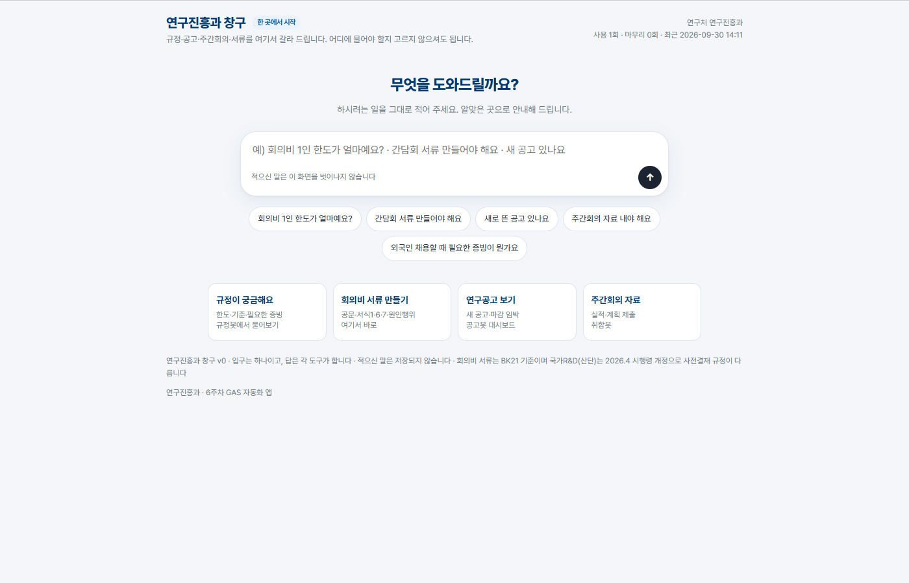
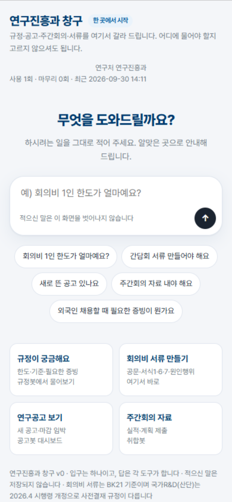
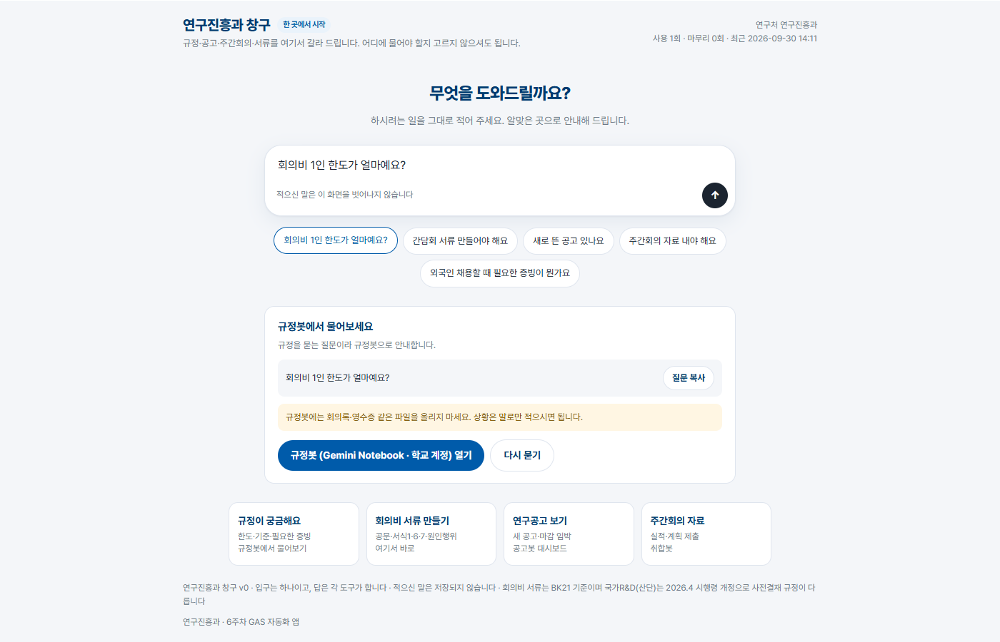

우리 부서 업무 창구 웹앱을 Google Apps Script로 만들어 줘. 화면은 검색창 하나와 예시 버튼 몇 개. 적은 말을 키워드로 갈라서 "규정 질문 → 규정 안내 주소", "서류 → 이 화면 안의 서류 양식", "그 밖 → 담당자 안내"로 보내 줘. 규칙: 적은 내용은 서버로 보내지 말고 브라우저 안에서만 처리해. 어디에도 저장하지 마. 주민등록번호·계좌번호 같은 형태가 보이면 어디로도 보내지 말고 멈춰서 알려 줘. 서버 파일(Code.gs)은 화면을 내려 주는 doGet과 사용 횟수 세기만 해. 테스트를 먼저 만들어서(node로 돌아가게) 전부 통과한 뒤에 알려 주고, 배포 방법(웹 앱, 실행 계정 = 나, 액세스 = 모든 사용자)을 처음 하는 사람 기준으로 README에 적어 줘.
그동안 규정 Q&A 봇, 연구공고봇, 주간회의 취합봇을 만들고 다듬었습니다(1~3주차 결과물). 도구가 늘어날수록 쓰는 사람은 질문하기 전에 "이건 어느 도구에 물을 일인가"를 먼저 골라야 합니다. 고르는 일이 한 번 더 생기면 도구를 쓰는 이유가 줄어듭니다. 그래서 도구를 하나 더 만드는 대신 입구를 하나로 모았습니다.
또 하나, 회의비 기안 전에는 확인할 것이 많습니다. 1인 한도, 주말·공휴일, 결제 시각, 업종, 참석 명단과 인원, 공문 적요 형식, 증빙 서식. 매번 지침을 다시 펼쳐 보는 대신, 적는 순간 같은 기준으로 한 번 훑어 주는 화면을 입구 안에 넣었습니다.
규정봇(노트북), 공고봇(메일·대시보드 시트), 취합봇(웹 화면). 각각은 잘 돌지만 문이 셋.
적은 말로 갈래를 나눠 안내하는 창구, 그리고 창구 안의 회의비 서류 화면.
| 적은 말(예) | 가는 곳 | 함께 보여 주는 것 |
|---|---|---|
| 회의비 1인 한도가 얼마예요? | 규정봇 | 질문 복사 버튼, "규정봇에는 회의록·영수증 같은 파일을 올리지 마세요" 안내 |
| 간담회 서류 만들어야 해요 | 회의비 서류(이 화면 안) | 회의 계획 칸 → 사전 체크 · 기안 문안 · 원인행위 입력표 · 증빙 서식 안내 |
| 새로 뜬 공고 있나요 | 공고봇 대시보드 | 대시보드 바로 열기 |
| 주간회의 자료 내야 해요 | 취합봇 | 취합봇 바로 열기 |
| 주민등록번호·계좌번호 형태가 섞인 글 | 멈춤 | 어디로도 보내지 않고, 빼고 다시 적어 달라고 안내 |
| 그 밖 | 담당자 | 문의 안내 |
doGet으로 화면을 내려 줌doPost, 요청 값 읽기)이 없음RULES와 공휴일표 한 곳에만// 화면 코드를 그대로 꺼내 node에서 돌리는 검사(일부)
✓ 회의비 1인 한도 경계값 · 주말 · 추석 연휴·대체공휴일 · 22시 · 주류 업종 단어 · 명단 수 불일치
✓ 공문 본문 1~6항목 · 건명 형식 · 적요 형식
✓ 규정 질문은 규정봇으로, 서류 요청은 이 화면으로, 공고는 공고봇으로, 주간회의는 취합봇으로
✓ 주민등록번호·계좌번호 형태가 섞이면 어디로도 보내지 않는다
✓ 화면에 서버·외부로 보내는 코드(fetch·XHR·sendBeacon·form action)가 없다
✓ 서버로 가는 값은 'plan'·'after' 두 가지뿐이다 · 브라우저 저장소를 쓰지 않는다
✓ Code.gs는 입력값을 받지도 저장하지도 않는다
✓ 좁은 화면(휴대폰)에서는 입력창 예시가 한 줄로 줄어든다
누가 나중에 "편하게" 전송이나 저장을 넣으면 위 검사가 바로 빨간색이 됩니다. 새 기능은 테스트를 먼저 쓰고(빨강) 화면을 고쳐(초록) 올립니다. 화면·규칙 코드와 테스트는 Claude Code가 작성했고, 코드는 직접 쓰지 않았습니다.
| 항목 | 내용 |
|---|---|
| 배포 주소 | https://script.google.com/macros/s/AKfycbzX3jH00kiiS46d3krmwfoBe7PT1jClHbHcydlXWcpvWUYZtfpcX1FmyUCrSatm744ZOQ/exec (Apps Script 웹 앱, 로그인 없이 열림) |
| 열어 본 곳 | PC 크롬 · 휴대폰 · 카톡 안 브라우저 — 세 곳 모두 로그인 없이 열리고, 사용 횟수가 서버와 이어짐(9/30 · 휴대폰·카톡은 화면 폭과 브라우저 흉내로 확인) |
| 사용 횟수 | 1회 (익명, 사전 체크·사후 체크를 누른 횟수) |
| 써 본 사람 한마디 | 아직 없음(9/30 배포) |



| 구분 | 내용 |
|---|---|
| 된 것 | 입구 하나(갈래 6가지)와 회의비 서류(회의 전·회의 뒤)를 Apps Script 웹 앱으로 배포. 테스트 55개 통과(배포하며 「공개돼도 안전한 주소만」 3개 추가). 휴대폰 크기(390px) 화면에서 가로로 넘치지 않음 확인. 적은 말은 화면 밖으로 나가지 않음. |
| 아직 안 된 것 | 다른 재원(국립대육성사업·산학협력단·교비) 회의비 기준 — 재원마다 지침이 달라 7주차에 예외표로. 규정봇 답을 창구 안에서 바로 보여 주기 — 규정봇은 별도 노트북이라 지금은 주소 안내까지. 영수증 사진 읽기·파일 저장은 일부러 넣지 않았습니다(개인정보가 섞일 수 있어서). |
| 바꾸지 않을 원칙 | 적은 말은 서버로 보내지 않는다. 저장하지 않는다. 규칙 숫자는 지침 원문 그대로 한 곳에만. 판정·승인과 최종 확인은 사람. |
| 구분 | Before | After |
|---|---|---|
| 어디에 물을지 | 도구 셋 중에서 먼저 고름 | 한 줄 적으면 갈래가 정해짐 |
| 회의비 기안 전 확인 | 지침을 펼쳐 항목마다 확인 | 적는 순간 같은 기준으로 한 번 훑음 |
| 공문 적요·원인행위 칸 | 지난 공문을 찾아 형식을 맞춤 | 적은 내용에서 형식대로 채워져 복사 |
다음 계획: ① 7주차 — 재원별 예외표(국립대육성·산학협력단·교비)를 같은 규칙 칸에 붙이기 ② 써 본 분 피드백으로 갈래 키워드 다듬기 ③ 규정봇 주소가 바뀌면 화면 맨 위 주소 칸 한 줄만 고치기.
Code.gs 내용을 폴더의 것으로 전부 바꿈 → 왼쪽 ＋ → HTML, 이름 index → 폴더의 index.html 전체 붙여 넣기 → 각각 Ctrl+S.